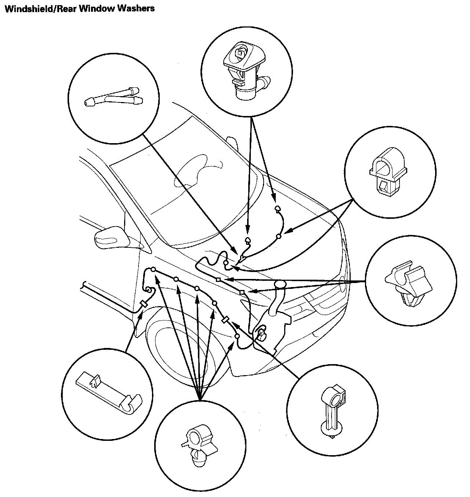
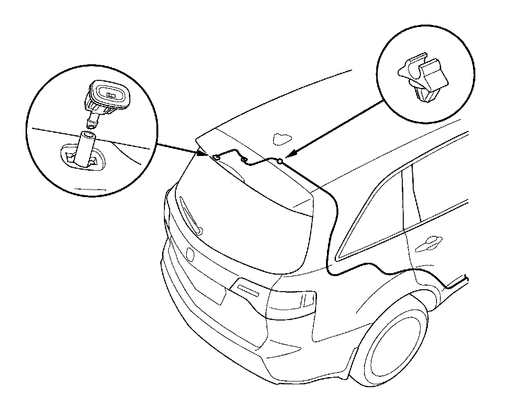
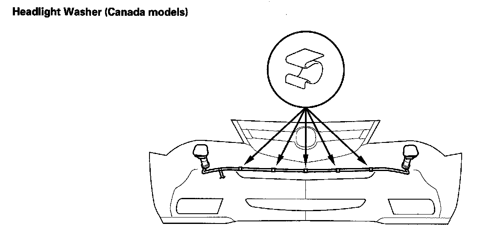

Windshield Washer Hose: Service and Repair
Washer Tube Replacement
Windshield/Rear Window Washers:


1. Remove the washer nozzles and clips, then remove the washer tubes.
2. Install the parts in the reverse order of removal. Take care not to pinch the washer tubes. Check the washer operation.